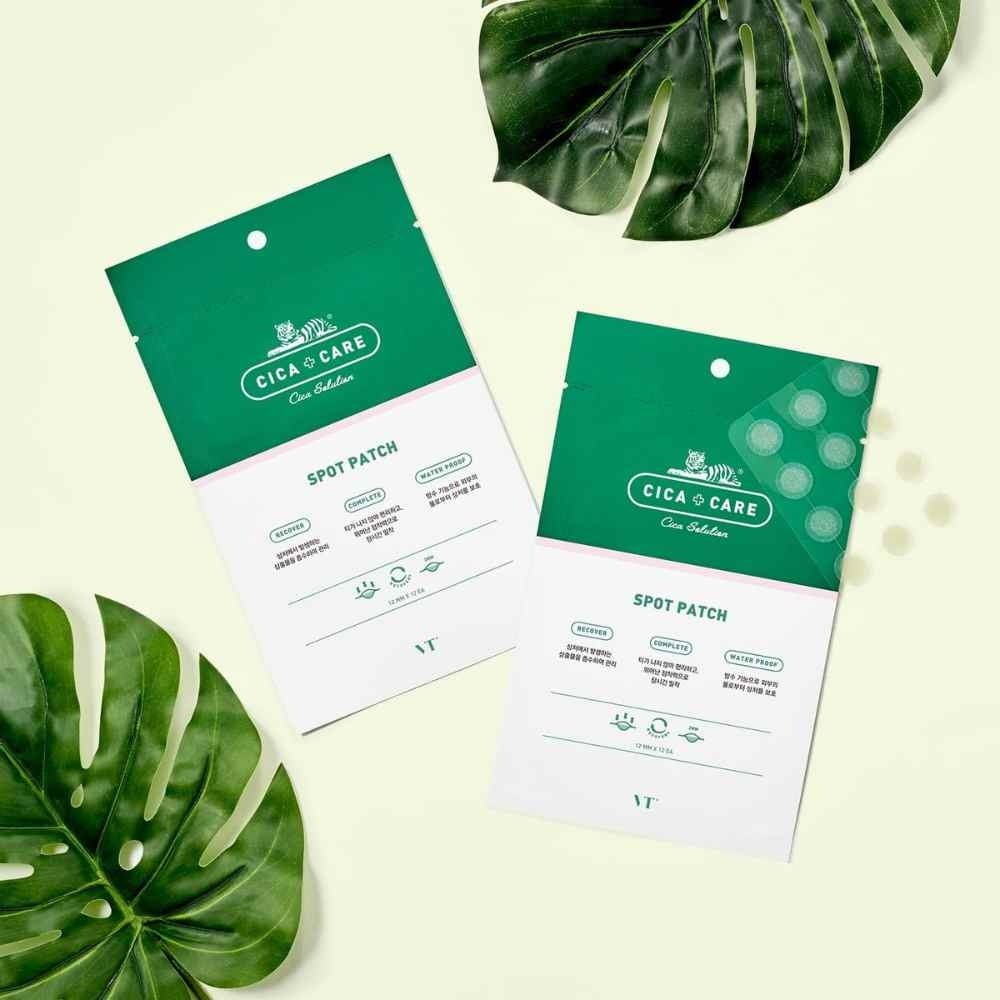
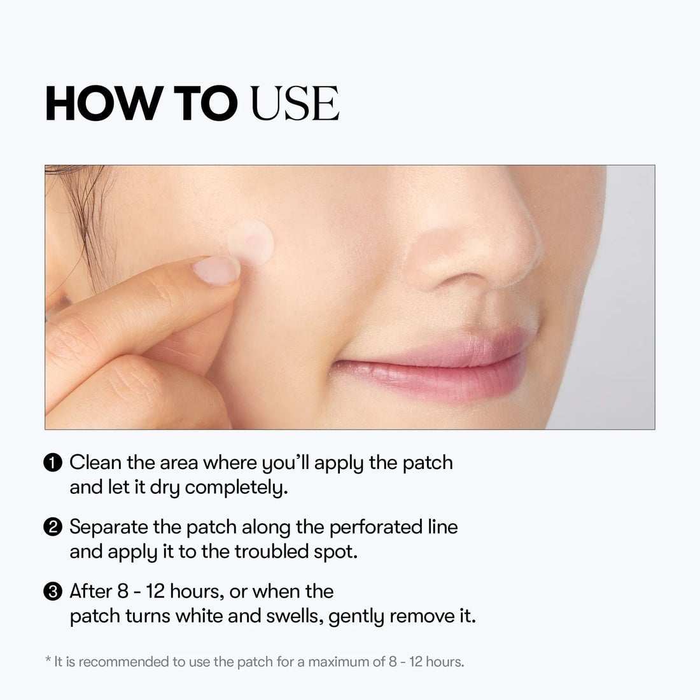
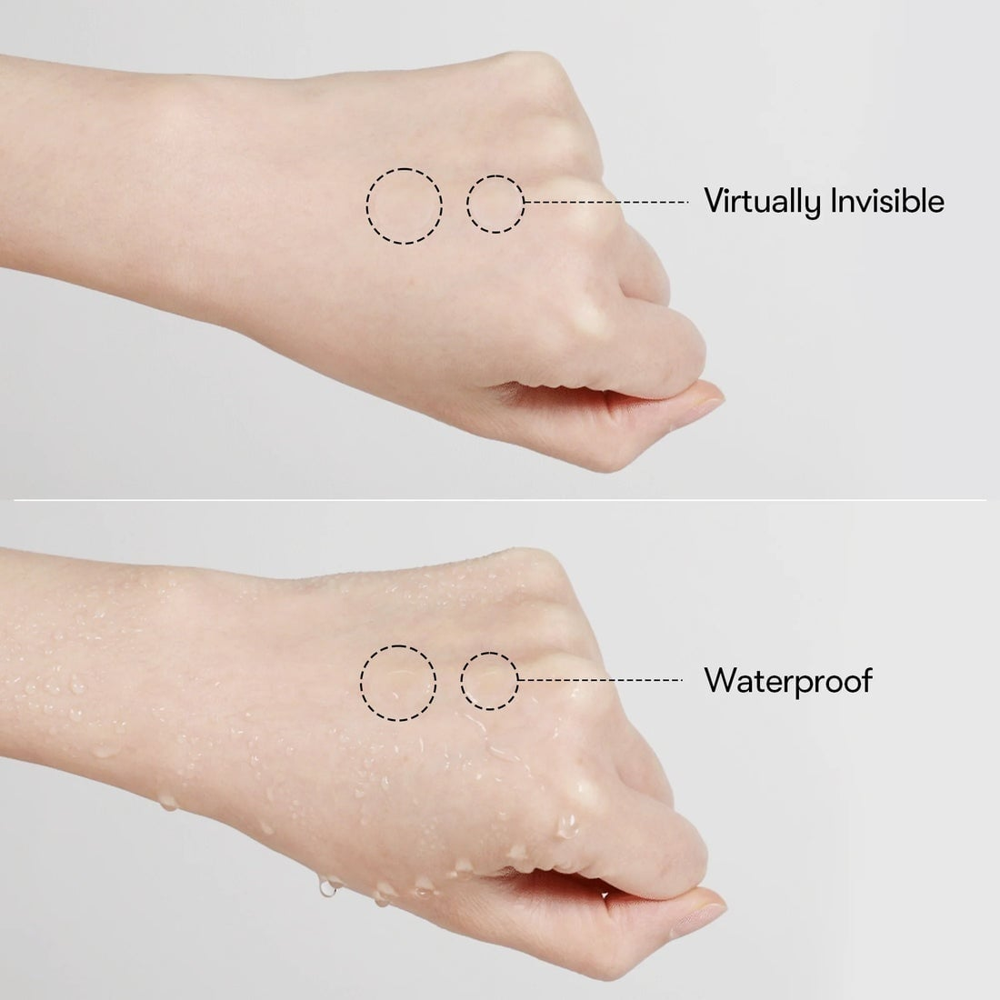
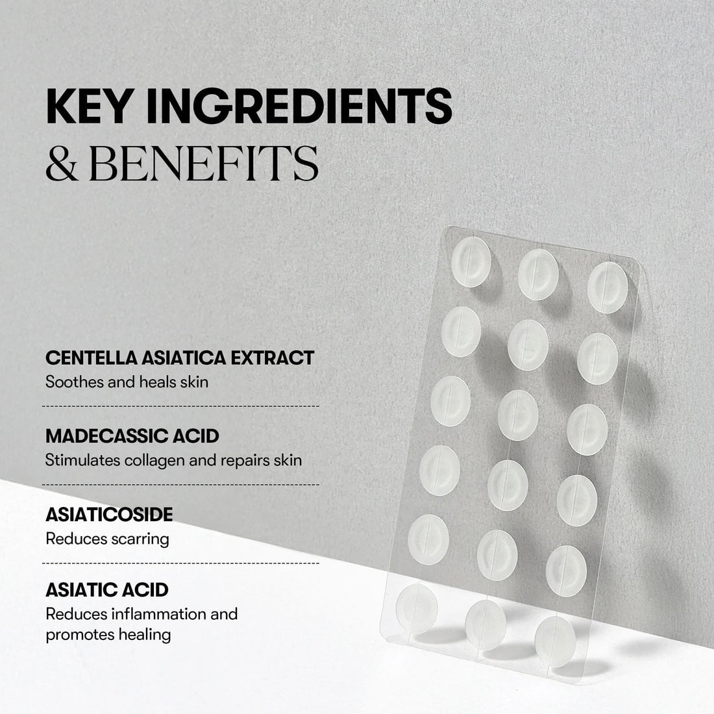

<div> <table style="border-collapse: collapse; width: 100.029%;" border="1"><colgroup><col style="width: 49.9285%;"><col style="width: 49.9285%;"></colgroup> <tbody> <tr> <td> <div><strong><span style="font-size: 14pt;">VT Cosmetics Cica Plasturi pentru pete</span></strong></div> <div><strong><span style="font-size: 14pt;">48 bucati</span></strong></div> <div><span style="font-size: 14pt;">VT Cosmetics Cica Care Spot Patch, prospetimea si originea naturala a ingredientelor, cu un design compact si practic al tratamentului local pentru calmarea rapida a acneei.</span></div> </td> <td></td> </tr> <tr> <td></td> <td><span style="font-size: 14pt;">Recomandarile includ curatarea zonei, aplicarea patch-ului pe linia perforata direct pe imperfectiune si indepartarea lui dupa un interval de 8-12 ore, cand acesta devine alb si a absorbit secretiile.</span></td> </tr> <tr> <td> <p data-path-to-node="7"><span style="font-size: 14pt; color: #000000;">Demonstratie vizuala a proprietatilor fizice remarcabile ale plasturilor VT Cosmetics Cica Care. Partea superioara arata ca acestia devin aproape invizibili dupa aplicarea pe piele, in timp ce partea inferioara le demonstreaza rezistenta excelenta la apa (waterproof), ramanand fixati in siguranta.</span></p> <p data-path-to-node="8"></p> </td> <td></td> </tr> <tr> <td></td> <td><span style="font-size: 14pt;">Formula plasturilor VT Cosmetics Cica Care include extract de Centella Asiatica pentru calmare, acid madecasic pentru reparare, asiaticozida pentru reducerea cicatricilor si acid asiatic cu rol antiinflamator, oferind o vindecare rapida a imperfectiunilor.</span></td> </tr> </tbody> </table> </div>